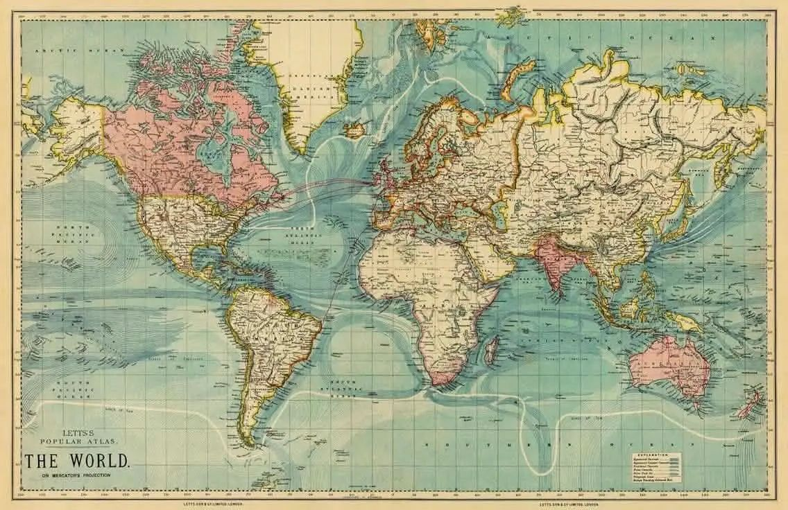
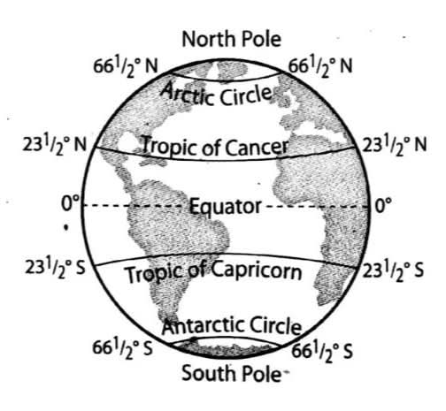
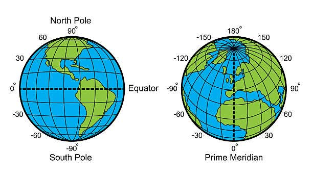
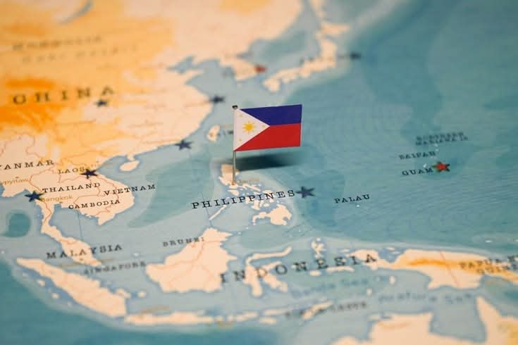
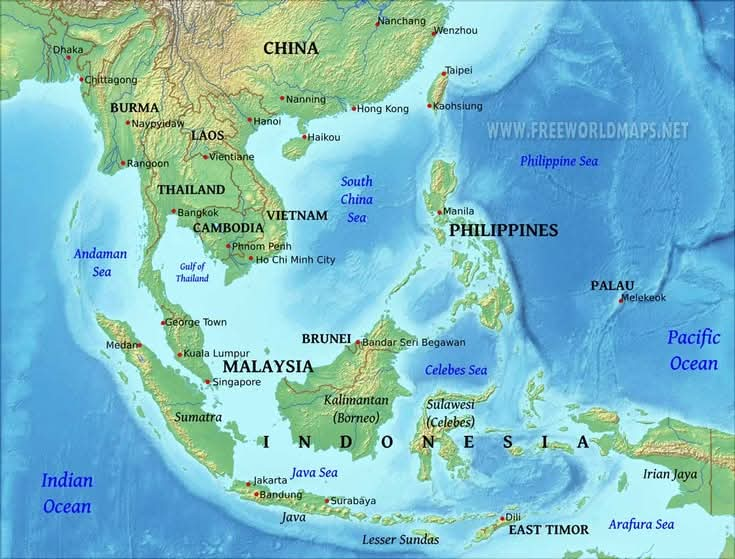

Pag-aaral ng Heograpiya ng Mundo
Mapa

Ang mapa ay isang representasyon o larawan ng isang lugar na nagpapakita ng lokasyon, anyo, at katangian ng isang pook.
Globo

Ang globo ay isang modelo ng mundo na nagpapakita ng tunay na hugis at pagkakaugnay ng mga kontinente at karagatan.

Latitude
Mga guhit na pahalang sa globo na ginagamit upang malaman ang layo ng isang lugar mula sa Ekwador.
Longitude
Mga guhit na patayo sa globo na ginagamit upang malaman ang lokasyon ng isang lugar mula sa Prime Meridian.

Ekwador
Guhit na sa mundo sa Hilaga at Timog na bahagi.
Prime Meridian
Pangunahing guhit ng longitude na nagsisilbing batayan ng lokasyon sa Silangan at Kanlurang bahagi ng mundo.
Pilipinas

Ang Pilipinas ay isang arkipelago na binubuo ng maraming pulo.
Main Islands:
• Luzon
• Visayas
• Mindanao
Lokasyon ng Pilipinas:
Matatagpuan sa pagitan ng 4° at 22° Hilagang latitud.
Absolute Location:
Matatagpuan sa pagitan ng 116° at 127° Silangang longhitud.
Relative Location

Tumutukoy sa lokasyon ng isang lugar batay sa kalapit na kalupaan o katubigan.
Vicinal Location
Kalapit na kalupaan.
Incular Location
Kalapit na katubigan.
Kartograpo
Isang taong gumagawa o nag-aaral ng mapa.